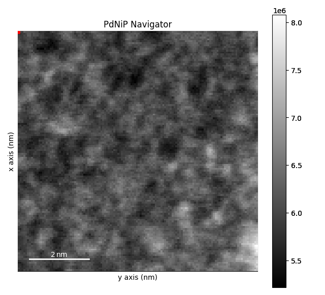
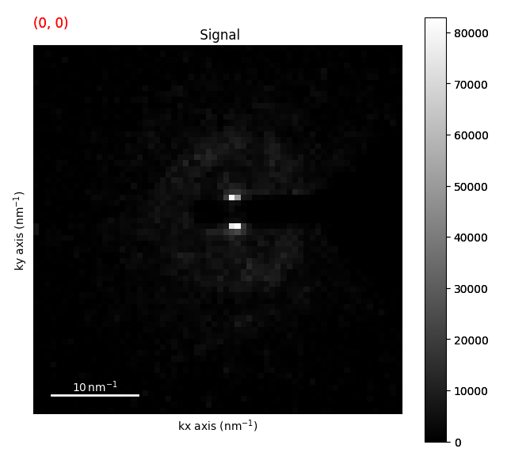

Note
Go to the end to download the full example code.
Flat Ewald’s Sphere Assumption#
In most cases, the Ewald’s sphere is assumed to be flat for diffraction patterns when doing 4D STEM. This is almost always a good assumption. That being said there are a couple of common units used with 4D STEM (e.g. nm-1, mrad, pixel coordinates) and it is important to understand how these units relate to each other. These units are also related to the camera length, pixel size, and beam energy (wavelength) of the microscope. In reality the beam energy is really the only thing that you need to know.
Let’s look at an example of this using the ZrNb Precipitate dataset.
from pyxem.data import pdnip_glass
g = pdnip_glass(allow_download=True)
g.calibration.beam_energy = "200 kV"
g.calibration.convergance_angle = "1 mrad" # set the convergence angle
0%| | 0.00/305M [00:00<?, ?B/s]
0%| | 4.10k/305M [00:00<2:08:45, 39.4kB/s]
0%| | 32.8k/305M [00:00<38:05, 133kB/s]
0%| | 73.7k/305M [00:00<26:33, 191kB/s]
0%| | 152k/305M [00:00<16:25, 309kB/s]
0%| | 197k/305M [00:00<17:07, 296kB/s]
0%| | 274k/305M [00:00<16:00, 317kB/s]
0%| | 369k/305M [00:01<12:49, 395kB/s]
0%| | 467k/305M [00:01<11:04, 458kB/s]
0%| | 565k/305M [00:01<10:10, 498kB/s]
0%| | 664k/305M [00:01<09:36, 528kB/s]
0%| | 778k/305M [00:01<08:44, 580kB/s]
0%| | 877k/305M [00:01<08:40, 584kB/s]
0%|▏ | 1.02M/305M [00:02<07:28, 677kB/s]
0%|▏ | 1.17M/305M [00:02<06:53, 735kB/s]
0%|▏ | 1.25M/305M [00:02<07:37, 663kB/s]
0%|▏ | 1.40M/305M [00:02<06:53, 733kB/s]
1%|▏ | 1.53M/305M [00:02<06:43, 752kB/s]
1%|▏ | 1.61M/305M [00:02<07:33, 668kB/s]
1%|▏ | 1.74M/305M [00:03<07:04, 714kB/s]
1%|▏ | 1.82M/305M [00:03<07:46, 649kB/s]
1%|▏ | 1.89M/305M [00:03<08:47, 574kB/s]
1%|▎ | 1.95M/305M [00:03<09:41, 521kB/s]
1%|▎ | 2.02M/305M [00:03<10:25, 484kB/s]
1%|▎ | 2.12M/305M [00:03<09:44, 518kB/s]
1%|▎ | 2.20M/305M [00:04<09:51, 512kB/s]
1%|▎ | 2.27M/305M [00:04<10:33, 478kB/s]
1%|▎ | 2.35M/305M [00:04<10:24, 484kB/s]
1%|▎ | 2.48M/305M [00:04<08:44, 576kB/s]
1%|▎ | 2.58M/305M [00:04<08:38, 583kB/s]
1%|▎ | 2.72M/305M [00:04<07:26, 676kB/s]
1%|▎ | 2.81M/305M [00:05<08:04, 623kB/s]
1%|▎ | 2.92M/305M [00:05<07:47, 645kB/s]
1%|▍ | 3.02M/305M [00:05<07:58, 631kB/s]
1%|▍ | 3.13M/305M [00:05<07:43, 650kB/s]
1%|▍ | 3.20M/305M [00:05<08:44, 575kB/s]
1%|▍ | 3.26M/305M [00:05<09:37, 522kB/s]
1%|▍ | 3.34M/305M [00:06<09:54, 507kB/s]
1%|▍ | 3.42M/305M [00:06<09:57, 504kB/s]
1%|▍ | 3.52M/305M [00:06<09:25, 532kB/s]
1%|▍ | 3.59M/305M [00:06<10:11, 492kB/s]
1%|▍ | 3.67M/305M [00:06<10:09, 494kB/s]
1%|▍ | 3.82M/305M [00:06<08:09, 614kB/s]
1%|▍ | 3.90M/305M [00:07<08:39, 579kB/s]
1%|▌ | 3.98M/305M [00:07<09:02, 555kB/s]
1%|▌ | 4.13M/305M [00:07<07:37, 657kB/s]
1%|▌ | 4.21M/305M [00:07<08:13, 609kB/s]
1%|▌ | 4.29M/305M [00:07<08:41, 576kB/s]
1%|▌ | 4.39M/305M [00:07<08:35, 582kB/s]
1%|▌ | 4.54M/305M [00:08<07:23, 676kB/s]
2%|▌ | 4.62M/305M [00:08<08:01, 622kB/s]
2%|▌ | 4.75M/305M [00:08<07:24, 674kB/s]
2%|▋ | 4.88M/305M [00:08<07:01, 711kB/s]
2%|▋ | 4.96M/305M [00:08<07:42, 647kB/s]
2%|▋ | 5.08M/305M [00:08<07:32, 662kB/s]
2%|▋ | 5.16M/305M [00:09<08:08, 612kB/s]
2%|▋ | 5.31M/305M [00:09<07:09, 697kB/s]
2%|▋ | 5.39M/305M [00:09<07:55, 630kB/s]
2%|▋ | 5.52M/305M [00:09<07:20, 679kB/s]
2%|▋ | 5.60M/305M [00:09<07:58, 625kB/s]
2%|▋ | 5.66M/305M [00:09<08:56, 558kB/s]
2%|▋ | 5.75M/305M [00:10<09:13, 540kB/s]
2%|▊ | 5.88M/305M [00:10<08:04, 616kB/s]
2%|▊ | 6.04M/305M [00:10<06:49, 730kB/s]
2%|▊ | 6.16M/305M [00:10<06:54, 720kB/s]
2%|▊ | 6.25M/305M [00:10<07:16, 683kB/s]
2%|▊ | 6.39M/305M [00:10<06:55, 717kB/s]
2%|▊ | 6.53M/305M [00:11<06:27, 770kB/s]
2%|▊ | 6.66M/305M [00:11<06:23, 778kB/s]
2%|▊ | 6.81M/305M [00:11<06:06, 813kB/s]
2%|▉ | 6.91M/305M [00:11<06:37, 748kB/s]
2%|▉ | 7.01M/305M [00:11<07:03, 703kB/s]
2%|▉ | 7.14M/305M [00:11<06:46, 731kB/s]
2%|▉ | 7.24M/305M [00:12<07:10, 691kB/s]
2%|▉ | 7.39M/305M [00:12<06:35, 752kB/s]
2%|▉ | 7.46M/305M [00:12<07:24, 668kB/s]
2%|▉ | 7.53M/305M [00:12<08:19, 595kB/s]
3%|▉ | 7.63M/305M [00:12<08:24, 588kB/s]
3%|▉ | 7.76M/305M [00:12<07:36, 651kB/s]
3%|█ | 7.86M/305M [00:13<07:47, 635kB/s]
3%|█ | 7.94M/305M [00:13<08:19, 594kB/s]
3%|█ | 8.09M/305M [00:13<07:13, 683kB/s]
3%|█ | 8.22M/305M [00:13<06:53, 716kB/s]
3%|█ | 8.29M/305M [00:13<07:45, 636kB/s]
3%|█ | 8.36M/305M [00:13<08:31, 580kB/s]
3%|█ | 8.45M/305M [00:13<08:53, 555kB/s]
3%|█ | 8.56M/305M [00:14<08:15, 597kB/s]
3%|█ | 8.64M/305M [00:14<08:41, 567kB/s]
3%|█ | 8.72M/305M [00:14<09:01, 547kB/s]
3%|█▏ | 8.82M/305M [00:14<08:46, 562kB/s]
3%|█▏ | 8.90M/305M [00:14<09:04, 543kB/s]
3%|█▏ | 8.99M/305M [00:14<09:18, 529kB/s]
3%|█▏ | 9.08M/305M [00:15<08:57, 550kB/s]
3%|█▏ | 9.23M/305M [00:15<07:32, 653kB/s]
3%|█▏ | 9.31M/305M [00:15<08:06, 607kB/s]
3%|█▏ | 9.40M/305M [00:15<08:34, 574kB/s]
3%|█▏ | 9.49M/305M [00:15<08:28, 581kB/s]
3%|█▏ | 9.56M/305M [00:15<09:20, 526kB/s]
3%|█▏ | 9.64M/305M [00:16<09:38, 510kB/s]
3%|█▎ | 9.79M/305M [00:16<07:51, 626kB/s]
3%|█▎ | 9.87M/305M [00:16<08:21, 587kB/s]
3%|█▎ | 9.98M/305M [00:16<07:55, 620kB/s]
3%|█▎ | 10.1M/305M [00:16<08:00, 613kB/s]
3%|█▎ | 10.2M/305M [00:16<08:03, 609kB/s]
3%|█▎ | 10.3M/305M [00:17<07:03, 695kB/s]
3%|█▎ | 10.4M/305M [00:17<07:03, 695kB/s]
3%|█▎ | 10.6M/305M [00:17<06:45, 726kB/s]
3%|█▎ | 10.7M/305M [00:17<07:27, 657kB/s]
4%|█▍ | 10.8M/305M [00:17<07:39, 640kB/s]
4%|█▍ | 10.8M/305M [00:17<08:12, 597kB/s]
4%|█▍ | 11.0M/305M [00:18<07:08, 685kB/s]
4%|█▍ | 11.1M/305M [00:18<06:32, 747kB/s]
4%|█▍ | 11.2M/305M [00:18<07:16, 672kB/s]
4%|█▍ | 11.3M/305M [00:18<07:11, 679kB/s]
4%|█▍ | 11.4M/305M [00:18<07:27, 655kB/s]
4%|█▍ | 11.5M/305M [00:18<08:02, 608kB/s]
4%|█▍ | 11.6M/305M [00:19<08:04, 605kB/s]
4%|█▌ | 11.7M/305M [00:19<07:07, 685kB/s]
4%|█▌ | 11.8M/305M [00:19<07:24, 658kB/s]
4%|█▌ | 11.9M/305M [00:19<08:00, 609kB/s]
4%|█▌ | 12.0M/305M [00:19<07:40, 636kB/s]
4%|█▌ | 12.2M/305M [00:19<07:27, 654kB/s]
4%|█▌ | 12.2M/305M [00:20<08:02, 606kB/s]
4%|█▌ | 12.3M/305M [00:20<08:04, 604kB/s]
4%|█▌ | 12.4M/305M [00:20<08:05, 602kB/s]
4%|█▌ | 12.5M/305M [00:20<08:31, 571kB/s]
4%|█▌ | 12.6M/305M [00:20<09:22, 519kB/s]
4%|█▋ | 12.7M/305M [00:20<07:41, 632kB/s]
4%|█▋ | 12.8M/305M [00:21<08:39, 562kB/s]
4%|█▋ | 12.9M/305M [00:21<08:04, 602kB/s]
4%|█▋ | 13.0M/305M [00:21<08:05, 601kB/s]
4%|█▋ | 13.1M/305M [00:21<07:22, 659kB/s]
4%|█▋ | 13.3M/305M [00:21<06:38, 730kB/s]
4%|█▋ | 13.4M/305M [00:21<07:02, 689kB/s]
4%|█▋ | 13.5M/305M [00:22<06:27, 752kB/s]
4%|█▋ | 13.6M/305M [00:22<07:10, 676kB/s]
5%|█▊ | 13.7M/305M [00:22<07:06, 682kB/s]
5%|█▊ | 13.8M/305M [00:22<07:08, 679kB/s]
5%|█▊ | 13.9M/305M [00:22<07:45, 625kB/s]
5%|█▊ | 14.0M/305M [00:22<08:15, 587kB/s]
5%|█▊ | 14.1M/305M [00:23<07:27, 649kB/s]
5%|█▊ | 14.2M/305M [00:23<08:00, 604kB/s]
5%|█▊ | 14.3M/305M [00:23<08:02, 602kB/s]
5%|█▊ | 14.4M/305M [00:23<08:28, 571kB/s]
5%|█▊ | 14.5M/305M [00:23<07:14, 667kB/s]
5%|█▊ | 14.6M/305M [00:23<07:28, 647kB/s]
5%|█▉ | 14.8M/305M [00:24<06:59, 692kB/s]
5%|█▉ | 14.9M/305M [00:24<06:24, 753kB/s]
5%|█▉ | 15.0M/305M [00:24<06:50, 706kB/s]
5%|█▉ | 15.1M/305M [00:24<07:40, 628kB/s]
5%|█▉ | 15.2M/305M [00:24<08:23, 575kB/s]
5%|█▉ | 15.3M/305M [00:24<08:17, 581kB/s]
5%|█▉ | 15.4M/305M [00:25<07:27, 646kB/s]
5%|█▉ | 15.5M/305M [00:25<08:25, 572kB/s]
5%|█▉ | 15.6M/305M [00:25<08:18, 579kB/s]
5%|██ | 15.7M/305M [00:25<07:50, 615kB/s]
5%|██ | 15.7M/305M [00:25<08:45, 550kB/s]
5%|██ | 15.8M/305M [00:25<09:00, 535kB/s]
5%|██ | 16.0M/305M [00:26<07:51, 613kB/s]
5%|██ | 16.0M/305M [00:26<08:00, 601kB/s]
5%|██ | 16.1M/305M [00:26<08:53, 540kB/s]
5%|██ | 16.2M/305M [00:26<09:06, 528kB/s]
5%|██ | 16.3M/305M [00:26<08:45, 549kB/s]
5%|██ | 16.4M/305M [00:26<09:32, 503kB/s]
5%|██ | 16.5M/305M [00:27<07:43, 621kB/s]
5%|██▏ | 16.6M/305M [00:27<07:27, 644kB/s]
5%|██▏ | 16.7M/305M [00:27<08:00, 600kB/s]
6%|██▏ | 16.8M/305M [00:27<08:02, 596kB/s]
6%|██▏ | 16.9M/305M [00:27<08:32, 561kB/s]
6%|██▏ | 16.9M/305M [00:27<09:20, 513kB/s]
6%|██▏ | 17.1M/305M [00:27<08:26, 568kB/s]
6%|██▏ | 17.2M/305M [00:28<07:54, 606kB/s]
6%|██▏ | 17.2M/305M [00:28<08:48, 544kB/s]
6%|██▏ | 17.4M/305M [00:28<07:46, 615kB/s]
6%|██▏ | 17.5M/305M [00:28<06:35, 726kB/s]
6%|██▎ | 17.6M/305M [00:28<07:16, 658kB/s]
6%|██▎ | 17.7M/305M [00:28<07:50, 610kB/s]
6%|██▎ | 17.8M/305M [00:29<08:17, 577kB/s]
6%|██▎ | 17.9M/305M [00:29<07:26, 642kB/s]
6%|██▎ | 18.0M/305M [00:29<07:58, 599kB/s]
6%|██▎ | 18.1M/305M [00:29<08:04, 591kB/s]
6%|██▎ | 18.2M/305M [00:29<08:28, 563kB/s]
6%|██▎ | 18.3M/305M [00:29<08:47, 543kB/s]
6%|██▎ | 18.3M/305M [00:30<09:00, 530kB/s]
6%|██▎ | 18.4M/305M [00:30<08:41, 549kB/s]
6%|██▎ | 18.6M/305M [00:30<08:01, 594kB/s]
6%|██▍ | 18.7M/305M [00:30<06:57, 684kB/s]
6%|██▍ | 18.8M/305M [00:30<07:34, 628kB/s]
6%|██▍ | 18.9M/305M [00:30<07:41, 619kB/s]
6%|██▍ | 19.0M/305M [00:31<06:46, 702kB/s]
6%|██▍ | 19.1M/305M [00:31<07:25, 641kB/s]
6%|██▍ | 19.2M/305M [00:31<07:34, 628kB/s]
6%|██▍ | 19.3M/305M [00:31<08:04, 589kB/s]
6%|██▍ | 19.5M/305M [00:31<06:25, 741kB/s]
6%|██▌ | 19.6M/305M [00:31<07:06, 668kB/s]
6%|██▌ | 19.6M/305M [00:32<07:44, 613kB/s]
6%|██▌ | 19.7M/305M [00:32<07:50, 605kB/s]
7%|██▌ | 19.8M/305M [00:32<08:16, 573kB/s]
7%|██▌ | 19.9M/305M [00:32<07:46, 610kB/s]
7%|██▌ | 20.0M/305M [00:32<08:13, 577kB/s]
7%|██▌ | 20.1M/305M [00:32<08:08, 583kB/s]
7%|██▌ | 20.2M/305M [00:33<08:36, 550kB/s]
7%|██▌ | 20.4M/305M [00:33<06:39, 712kB/s]
7%|██▌ | 20.5M/305M [00:33<06:42, 707kB/s]
7%|██▋ | 20.6M/305M [00:33<06:27, 732kB/s]
7%|██▋ | 20.7M/305M [00:33<06:33, 721kB/s]
7%|██▋ | 20.9M/305M [00:33<06:21, 743kB/s]
7%|██▋ | 20.9M/305M [00:34<07:03, 670kB/s]
7%|██▋ | 21.0M/305M [00:34<07:38, 619kB/s]
7%|██▋ | 21.2M/305M [00:34<06:43, 702kB/s]
7%|██▋ | 21.3M/305M [00:34<07:22, 641kB/s]
7%|██▋ | 21.4M/305M [00:34<06:19, 747kB/s]
7%|██▊ | 21.5M/305M [00:34<06:43, 702kB/s]
7%|██▊ | 21.6M/305M [00:35<06:43, 701kB/s]
7%|██▊ | 21.8M/305M [00:35<05:45, 818kB/s]
7%|██▊ | 22.0M/305M [00:35<05:36, 841kB/s]
7%|██▊ | 22.0M/305M [00:35<06:18, 746kB/s]
7%|██▊ | 22.2M/305M [00:35<05:47, 813kB/s]
7%|██▊ | 22.3M/305M [00:35<06:06, 770kB/s]
7%|██▊ | 22.4M/305M [00:36<06:03, 776kB/s]
7%|██▉ | 22.5M/305M [00:36<06:46, 693kB/s]
7%|██▉ | 22.6M/305M [00:36<07:04, 665kB/s]
7%|██▉ | 22.7M/305M [00:36<07:39, 614kB/s]
7%|██▉ | 22.8M/305M [00:36<08:06, 579kB/s]
8%|██▉ | 22.9M/305M [00:36<08:01, 585kB/s]
8%|██▉ | 23.0M/305M [00:37<07:14, 648kB/s]
8%|██▉ | 23.1M/305M [00:37<06:46, 693kB/s]
8%|██▉ | 23.3M/305M [00:37<05:46, 812kB/s]
8%|██▉ | 23.4M/305M [00:37<06:31, 719kB/s]
8%|███ | 23.5M/305M [00:37<06:52, 682kB/s]
8%|███ | 23.6M/305M [00:37<06:49, 687kB/s]
8%|███ | 23.7M/305M [00:38<07:05, 660kB/s]
8%|███ | 23.8M/305M [00:38<07:40, 610kB/s]
8%|███ | 24.0M/305M [00:38<06:27, 725kB/s]
8%|███ | 24.1M/305M [00:38<06:48, 687kB/s]
8%|███ | 24.2M/305M [00:38<05:59, 779kB/s]
8%|███ | 24.3M/305M [00:38<06:26, 725kB/s]
8%|███▏ | 24.4M/305M [00:39<06:35, 709kB/s]
8%|███▏ | 24.5M/305M [00:39<07:13, 646kB/s]
8%|███▏ | 24.6M/305M [00:39<07:03, 661kB/s]
8%|███▏ | 24.8M/305M [00:39<06:22, 732kB/s]
8%|███▏ | 25.0M/305M [00:39<05:21, 871kB/s]
8%|███▏ | 25.1M/305M [00:39<05:41, 818kB/s]
8%|███▏ | 25.2M/305M [00:40<05:44, 811kB/s]
8%|███▏ | 25.3M/305M [00:40<05:59, 777kB/s]
8%|███▎ | 25.5M/305M [00:40<05:09, 902kB/s]
8%|███▎ | 25.6M/305M [00:40<05:31, 840kB/s]
8%|███▎ | 25.7M/305M [00:40<06:04, 765kB/s]
8%|███▎ | 25.8M/305M [00:40<06:31, 712kB/s]
9%|███▎ | 25.9M/305M [00:41<07:20, 633kB/s]
9%|███▎ | 26.0M/305M [00:41<07:38, 608kB/s]
9%|███▎ | 26.1M/305M [00:41<07:40, 605kB/s]
9%|███▎ | 26.2M/305M [00:41<07:42, 603kB/s]
9%|███▎ | 26.3M/305M [00:41<08:07, 571kB/s]
9%|███▍ | 26.4M/305M [00:41<07:36, 609kB/s]
9%|███▍ | 26.5M/305M [00:42<07:02, 658kB/s]
9%|███▍ | 26.6M/305M [00:42<07:14, 640kB/s]
9%|███▍ | 26.7M/305M [00:42<07:02, 657kB/s]
9%|███▍ | 26.9M/305M [00:42<05:52, 789kB/s]
9%|███▍ | 27.1M/305M [00:42<05:38, 820kB/s]
9%|███▍ | 27.2M/305M [00:42<06:19, 731kB/s]
9%|███▍ | 27.3M/305M [00:42<05:59, 772kB/s]
9%|███▌ | 27.4M/305M [00:43<05:55, 779kB/s]
9%|███▌ | 27.6M/305M [00:43<05:28, 844kB/s]
9%|███▌ | 27.7M/305M [00:43<05:46, 800kB/s]
9%|███▌ | 27.8M/305M [00:43<06:00, 769kB/s]
9%|███▌ | 27.9M/305M [00:43<06:25, 717kB/s]
9%|███▌ | 28.0M/305M [00:43<06:46, 681kB/s]
9%|███▌ | 28.1M/305M [00:44<07:21, 627kB/s]
9%|███▌ | 28.2M/305M [00:44<07:06, 648kB/s]
9%|███▋ | 28.3M/305M [00:44<06:39, 691kB/s]
9%|███▋ | 28.4M/305M [00:44<07:15, 634kB/s]
9%|███▋ | 28.6M/305M [00:44<06:44, 682kB/s]
9%|███▋ | 28.7M/305M [00:44<07:04, 650kB/s]
9%|███▋ | 28.8M/305M [00:45<07:14, 635kB/s]
9%|███▋ | 28.8M/305M [00:45<08:13, 559kB/s]
9%|███▋ | 28.9M/305M [00:45<08:04, 570kB/s]
10%|███▋ | 29.0M/305M [00:45<07:33, 608kB/s]
10%|███▋ | 29.1M/305M [00:45<07:59, 575kB/s]
10%|███▋ | 29.2M/305M [00:45<07:53, 581kB/s]
10%|███▊ | 29.3M/305M [00:46<07:06, 646kB/s]
10%|███▊ | 29.5M/305M [00:46<06:56, 661kB/s]
10%|███▊ | 29.6M/305M [00:46<07:08, 642kB/s]
10%|███▊ | 29.7M/305M [00:46<06:23, 717kB/s]
10%|███▊ | 29.8M/305M [00:46<06:11, 740kB/s]
10%|███▊ | 30.0M/305M [00:46<06:02, 757kB/s]
10%|███▊ | 30.1M/305M [00:47<06:26, 710kB/s]
10%|███▊ | 30.2M/305M [00:47<06:45, 676kB/s]
10%|███▊ | 30.2M/305M [00:47<07:20, 623kB/s]
10%|███▉ | 30.4M/305M [00:47<06:29, 704kB/s]
10%|███▉ | 30.5M/305M [00:47<06:30, 702kB/s]
10%|███▉ | 30.7M/305M [00:47<05:47, 789kB/s]
10%|███▉ | 30.8M/305M [00:48<06:03, 754kB/s]
10%|███▉ | 30.9M/305M [00:48<06:27, 707kB/s]
10%|███▉ | 31.0M/305M [00:48<07:04, 645kB/s]
10%|███▉ | 31.0M/305M [00:48<07:36, 600kB/s]
10%|████ | 31.3M/305M [00:48<05:15, 866kB/s]
10%|████ | 31.4M/305M [00:48<05:47, 786kB/s]
10%|████ | 31.5M/305M [00:49<06:30, 700kB/s]
10%|████ | 31.6M/305M [00:49<06:47, 669kB/s]
10%|████ | 31.7M/305M [00:49<06:42, 678kB/s]
10%|████ | 31.8M/305M [00:49<06:07, 743kB/s]
10%|████ | 31.9M/305M [00:49<06:29, 699kB/s]
11%|████ | 32.2M/305M [00:49<04:50, 937kB/s]
11%|████▏ | 32.3M/305M [00:50<05:14, 866kB/s]
11%|████▏ | 32.4M/305M [00:50<05:46, 785kB/s]
11%|████▏ | 32.6M/305M [00:50<05:22, 845kB/s]
11%|████▏ | 32.6M/305M [00:50<05:53, 770kB/s]
11%|████▏ | 32.8M/305M [00:50<05:49, 778kB/s]
11%|████▏ | 32.9M/305M [00:50<06:31, 694kB/s]
11%|████▏ | 33.0M/305M [00:51<06:18, 717kB/s]
11%|████▏ | 33.1M/305M [00:51<06:38, 681kB/s]
11%|████▏ | 33.2M/305M [00:51<06:53, 656kB/s]
11%|████▎ | 33.3M/305M [00:51<07:25, 609kB/s]
11%|████▎ | 33.4M/305M [00:51<07:06, 636kB/s]
11%|████▎ | 33.5M/305M [00:51<07:14, 624kB/s]
11%|████▎ | 33.6M/305M [00:52<06:59, 646kB/s]
11%|████▎ | 33.7M/305M [00:52<07:08, 632kB/s]
11%|████▎ | 33.8M/305M [00:52<06:55, 652kB/s]
11%|████▎ | 33.9M/305M [00:52<07:06, 635kB/s]
11%|████▎ | 34.0M/305M [00:52<07:13, 624kB/s]
11%|████▎ | 34.1M/305M [00:52<07:19, 616kB/s]
11%|████▍ | 34.3M/305M [00:53<06:26, 700kB/s]
11%|████▍ | 34.3M/305M [00:53<06:43, 670kB/s]
11%|████▍ | 34.5M/305M [00:53<06:21, 708kB/s]
11%|████▍ | 34.6M/305M [00:53<06:23, 705kB/s]
11%|████▍ | 34.7M/305M [00:53<06:41, 672kB/s]
11%|████▍ | 34.8M/305M [00:53<07:15, 620kB/s]
11%|████▍ | 34.9M/305M [00:54<06:59, 643kB/s]
12%|████▍ | 35.0M/305M [00:54<06:03, 741kB/s]
12%|████▌ | 35.2M/305M [00:54<05:07, 877kB/s]
12%|████▌ | 35.3M/305M [00:54<05:39, 793kB/s]
12%|████▌ | 35.5M/305M [00:54<05:04, 883kB/s]
12%|████▌ | 35.7M/305M [00:54<05:14, 856kB/s]
12%|████▍ | 35.9M/305M [00:55<04:17, 1.04MB/s]
12%|████▌ | 36.0M/305M [00:55<04:49, 926kB/s]
12%|████▌ | 36.1M/305M [00:55<05:27, 821kB/s]
12%|████▋ | 36.2M/305M [00:55<05:21, 835kB/s]
12%|████▋ | 36.3M/305M [00:55<06:01, 742kB/s]
12%|████▋ | 36.4M/305M [00:55<06:27, 692kB/s]
12%|████▋ | 36.5M/305M [00:56<06:26, 693kB/s]
12%|████▋ | 36.7M/305M [00:56<06:09, 725kB/s]
12%|████▋ | 36.8M/305M [00:56<06:13, 716kB/s]
12%|████▋ | 37.0M/305M [00:56<04:33, 979kB/s]
12%|████▊ | 37.1M/305M [00:56<05:09, 865kB/s]
12%|████▊ | 37.3M/305M [00:56<05:31, 807kB/s]
12%|████▊ | 37.4M/305M [00:56<05:20, 834kB/s]
12%|████▊ | 37.5M/305M [00:57<05:24, 823kB/s]
12%|████▊ | 37.6M/305M [00:57<05:53, 755kB/s]
12%|████▊ | 37.7M/305M [00:57<06:16, 708kB/s]
12%|████▊ | 37.8M/305M [00:57<06:35, 675kB/s]
12%|████▊ | 37.9M/305M [00:57<07:08, 622kB/s]
13%|████▉ | 38.2M/305M [00:57<04:33, 973kB/s]
13%|████▉ | 38.3M/305M [00:58<04:49, 920kB/s]
13%|████▉ | 38.4M/305M [00:58<05:26, 816kB/s]
13%|████▉ | 38.6M/305M [00:58<05:37, 788kB/s]
13%|████▉ | 38.8M/305M [00:58<04:34, 967kB/s]
13%|████▉ | 38.9M/305M [00:58<05:10, 856kB/s]
13%|████▉ | 39.0M/305M [00:58<05:50, 757kB/s]
13%|█████ | 39.2M/305M [00:59<04:42, 941kB/s]
13%|█████ | 39.3M/305M [00:59<04:58, 890kB/s]
13%|█████ | 39.4M/305M [00:59<05:18, 831kB/s]
13%|█████ | 39.5M/305M [00:59<05:35, 791kB/s]
13%|█████ | 39.7M/305M [00:59<05:34, 792kB/s]
13%|█████ | 39.8M/305M [00:59<06:16, 704kB/s]
13%|█████ | 39.9M/305M [01:00<06:01, 732kB/s]
13%|█████ | 40.0M/305M [01:00<06:06, 722kB/s]
13%|█████▏ | 40.1M/305M [01:00<06:26, 685kB/s]
13%|█████▏ | 40.2M/305M [01:00<06:23, 689kB/s]
13%|█████▏ | 40.3M/305M [01:00<06:39, 662kB/s]
13%|█████▏ | 40.4M/305M [01:00<06:32, 672kB/s]
13%|█████▏ | 40.5M/305M [01:01<06:46, 650kB/s]
13%|█████▏ | 40.7M/305M [01:01<05:50, 754kB/s]
13%|█████▏ | 40.8M/305M [01:01<05:44, 767kB/s]
13%|█████▏ | 41.0M/305M [01:01<05:39, 776kB/s]
13%|█████▎ | 41.1M/305M [01:01<05:24, 811kB/s]
14%|█████▏ | 41.4M/305M [01:01<03:59, 1.10MB/s]
14%|█████▎ | 41.5M/305M [01:02<04:29, 978kB/s]
14%|█████▎ | 41.6M/305M [01:02<05:04, 864kB/s]
14%|█████▎ | 41.7M/305M [01:02<05:22, 814kB/s]
14%|█████▎ | 41.8M/305M [01:02<05:37, 778kB/s]
14%|█████▎ | 42.0M/305M [01:03<14:54, 294kB/s]
14%|█████▍ | 42.0M/305M [01:03<13:54, 315kB/s]
14%|█████▍ | 42.1M/305M [01:04<13:19, 328kB/s]
14%|█████▍ | 42.2M/305M [01:04<11:40, 374kB/s]
14%|█████▍ | 42.3M/305M [01:04<10:06, 432kB/s]
14%|█████▍ | 42.5M/305M [01:04<07:40, 569kB/s]
14%|█████▍ | 42.6M/305M [01:04<08:06, 538kB/s]
14%|█████▍ | 42.6M/305M [01:04<08:04, 540kB/s]
14%|█████▍ | 42.7M/305M [01:05<08:15, 529kB/s]
14%|█████▍ | 42.8M/305M [01:05<08:23, 520kB/s]
14%|█████▍ | 43.0M/305M [01:05<06:56, 628kB/s]
14%|█████▌ | 43.1M/305M [01:05<06:26, 677kB/s]
14%|█████▌ | 43.2M/305M [01:05<06:58, 624kB/s]
14%|█████▌ | 43.3M/305M [01:05<07:25, 587kB/s]
14%|█████▌ | 43.4M/305M [01:06<06:42, 649kB/s]
14%|█████▌ | 43.5M/305M [01:06<07:12, 604kB/s]
14%|█████▌ | 43.5M/305M [01:06<08:00, 543kB/s]
14%|█████▌ | 43.6M/305M [01:06<08:12, 530kB/s]
14%|█████▌ | 43.8M/305M [01:06<06:48, 639kB/s]
14%|█████▌ | 43.8M/305M [01:06<07:17, 596kB/s]
14%|█████▌ | 43.9M/305M [01:06<07:39, 567kB/s]
14%|█████▋ | 44.0M/305M [01:07<08:24, 516kB/s]
14%|█████▋ | 44.1M/305M [01:07<07:14, 599kB/s]
15%|█████▋ | 44.3M/305M [01:07<06:18, 688kB/s]
15%|█████▋ | 44.4M/305M [01:07<06:33, 661kB/s]
15%|█████▋ | 44.5M/305M [01:07<06:45, 642kB/s]
15%|█████▋ | 44.5M/305M [01:07<07:19, 592kB/s]
15%|█████▋ | 44.7M/305M [01:08<06:20, 683kB/s]
15%|█████▋ | 44.8M/305M [01:08<06:55, 626kB/s]
15%|█████▋ | 44.9M/305M [01:08<07:22, 587kB/s]
15%|█████▊ | 45.0M/305M [01:08<06:39, 649kB/s]
15%|█████▊ | 45.1M/305M [01:08<07:09, 604kB/s]
15%|█████▊ | 45.2M/305M [01:08<06:15, 692kB/s]
15%|█████▊ | 45.4M/305M [01:09<05:46, 749kB/s]
15%|█████▊ | 45.5M/305M [01:09<06:08, 703kB/s]
15%|█████▊ | 45.6M/305M [01:09<06:25, 672kB/s]
15%|█████▊ | 45.7M/305M [01:09<06:38, 650kB/s]
15%|█████▊ | 45.8M/305M [01:09<06:48, 634kB/s]
15%|█████▊ | 45.9M/305M [01:09<06:55, 623kB/s]
15%|█████▉ | 45.9M/305M [01:10<07:21, 586kB/s]
15%|█████▉ | 46.0M/305M [01:10<07:42, 560kB/s]
15%|█████▉ | 46.1M/305M [01:10<06:49, 631kB/s]
15%|█████▉ | 46.3M/305M [01:10<06:37, 651kB/s]
15%|█████▉ | 46.3M/305M [01:10<07:06, 605kB/s]
15%|█████▉ | 46.5M/305M [01:10<06:29, 663kB/s]
15%|█████▉ | 46.6M/305M [01:11<07:00, 613kB/s]
15%|█████▉ | 46.6M/305M [01:11<07:31, 571kB/s]
15%|█████▉ | 46.7M/305M [01:11<08:16, 519kB/s]
15%|█████▉ | 46.8M/305M [01:11<07:54, 543kB/s]
15%|██████ | 46.9M/305M [01:11<08:06, 529kB/s]
15%|██████ | 47.0M/305M [01:11<07:24, 580kB/s]
15%|██████ | 47.1M/305M [01:12<08:10, 525kB/s]
15%|██████ | 47.1M/305M [01:12<08:48, 487kB/s]
15%|██████ | 47.2M/305M [01:12<08:45, 490kB/s]
16%|██████ | 47.4M/305M [01:12<07:00, 611kB/s]
16%|██████ | 47.5M/305M [01:12<07:03, 607kB/s]
16%|██████ | 47.6M/305M [01:12<06:45, 634kB/s]
16%|██████ | 47.7M/305M [01:13<07:13, 593kB/s]
16%|██████ | 47.8M/305M [01:13<06:32, 654kB/s]
16%|██████▏ | 47.9M/305M [01:13<07:02, 607kB/s]
16%|██████▏ | 48.0M/305M [01:13<06:26, 664kB/s]
16%|██████▏ | 48.1M/305M [01:13<06:57, 614kB/s]
16%|██████▏ | 48.2M/305M [01:13<06:07, 698kB/s]
16%|██████▏ | 48.3M/305M [01:14<06:51, 623kB/s]
16%|██████▏ | 48.4M/305M [01:14<07:28, 571kB/s]
16%|██████▏ | 48.5M/305M [01:14<07:46, 549kB/s]
16%|██████▏ | 48.6M/305M [01:14<06:32, 652kB/s]
16%|██████▏ | 48.8M/305M [01:14<05:29, 778kB/s]
16%|██████▎ | 48.9M/305M [01:14<06:13, 685kB/s]
16%|██████▎ | 49.0M/305M [01:15<06:23, 667kB/s]
16%|██████▎ | 49.0M/305M [01:15<06:54, 616kB/s]
16%|██████▎ | 49.2M/305M [01:15<06:05, 699kB/s]
16%|██████▎ | 49.3M/305M [01:15<06:39, 640kB/s]
16%|██████▎ | 49.4M/305M [01:15<06:11, 687kB/s]
16%|██████▎ | 49.5M/305M [01:15<06:26, 659kB/s]
16%|██████▎ | 49.6M/305M [01:16<07:13, 589kB/s]
16%|██████▎ | 49.7M/305M [01:16<06:57, 611kB/s]
16%|██████▎ | 49.7M/305M [01:16<07:45, 548kB/s]
16%|██████▍ | 49.9M/305M [01:16<07:10, 592kB/s]
16%|██████▍ | 49.9M/305M [01:16<07:56, 535kB/s]
16%|██████▍ | 50.0M/305M [01:16<08:06, 524kB/s]
16%|██████▍ | 50.2M/305M [01:17<05:37, 754kB/s]
17%|██████▍ | 50.3M/305M [01:17<05:59, 707kB/s]
17%|██████▍ | 50.4M/305M [01:17<06:34, 644kB/s]
17%|██████▍ | 50.5M/305M [01:17<06:43, 630kB/s]
17%|██████▍ | 50.6M/305M [01:17<06:49, 620kB/s]
17%|██████▍ | 50.7M/305M [01:17<06:53, 614kB/s]
17%|██████▌ | 50.8M/305M [01:18<06:08, 688kB/s]
17%|██████▌ | 51.0M/305M [01:18<05:38, 750kB/s]
17%|██████▌ | 51.1M/305M [01:18<06:16, 674kB/s]
17%|██████▌ | 51.2M/305M [01:18<06:29, 651kB/s]
17%|██████▌ | 51.2M/305M [01:18<06:58, 605kB/s]
17%|██████▌ | 51.3M/305M [01:18<07:21, 573kB/s]
17%|██████▌ | 51.5M/305M [01:19<05:33, 760kB/s]
17%|██████▌ | 51.7M/305M [01:19<05:28, 771kB/s]
17%|██████▋ | 51.8M/305M [01:19<05:13, 806kB/s]
17%|██████▋ | 52.0M/305M [01:19<05:03, 833kB/s]
17%|██████▋ | 52.2M/305M [01:19<04:20, 970kB/s]
17%|██████▋ | 52.3M/305M [01:19<04:34, 919kB/s]
17%|██████▋ | 52.4M/305M [01:20<04:55, 852kB/s]
17%|██████▋ | 52.5M/305M [01:20<05:12, 806kB/s]
17%|██████▋ | 52.6M/305M [01:20<05:53, 714kB/s]
17%|██████▊ | 52.8M/305M [01:20<05:27, 768kB/s]
17%|██████▊ | 53.0M/305M [01:20<04:25, 948kB/s]
17%|██████▊ | 53.1M/305M [01:20<04:58, 842kB/s]
17%|██████▊ | 53.2M/305M [01:20<05:14, 799kB/s]
17%|██████▊ | 53.3M/305M [01:21<05:54, 709kB/s]
18%|██████▊ | 53.4M/305M [01:21<05:41, 735kB/s]
18%|██████▊ | 53.5M/305M [01:21<05:46, 724kB/s]
18%|██████▊ | 53.6M/305M [01:21<06:22, 656kB/s]
18%|██████▉ | 53.7M/305M [01:21<06:33, 638kB/s]
18%|██████▉ | 53.8M/305M [01:21<06:40, 627kB/s]
18%|██████▉ | 53.9M/305M [01:22<06:45, 618kB/s]
18%|██████▉ | 54.0M/305M [01:22<06:30, 642kB/s]
18%|██████▉ | 54.1M/305M [01:22<06:38, 629kB/s]
18%|██████▉ | 54.2M/305M [01:22<07:05, 588kB/s]
18%|██████▉ | 54.3M/305M [01:22<06:24, 650kB/s]
18%|██████▉ | 54.4M/305M [01:22<06:53, 605kB/s]
18%|██████▉ | 54.6M/305M [01:23<06:01, 691kB/s]
18%|███████ | 54.7M/305M [01:23<05:07, 812kB/s]
18%|███████ | 54.8M/305M [01:23<05:47, 718kB/s]
18%|███████ | 54.9M/305M [01:23<06:06, 682kB/s]
18%|███████ | 55.0M/305M [01:23<06:38, 627kB/s]
18%|███████ | 55.1M/305M [01:23<06:12, 670kB/s]
18%|███████ | 55.2M/305M [01:24<06:24, 649kB/s]
18%|███████ | 55.3M/305M [01:24<06:53, 604kB/s]
18%|███████ | 55.4M/305M [01:24<06:54, 602kB/s]
18%|███████ | 55.5M/305M [01:24<06:54, 600kB/s]
18%|███████ | 55.6M/305M [01:24<07:17, 570kB/s]
18%|███████▏ | 55.7M/305M [01:24<07:10, 578kB/s]
18%|███████▏ | 55.8M/305M [01:25<07:05, 584kB/s]
18%|███████▏ | 55.9M/305M [01:25<06:42, 618kB/s]
18%|███████▏ | 56.0M/305M [01:25<06:46, 612kB/s]
18%|███████▏ | 56.1M/305M [01:25<07:10, 578kB/s]
18%|███████▏ | 56.2M/305M [01:25<05:53, 704kB/s]
18%|███████▏ | 56.3M/305M [01:25<06:09, 672kB/s]
19%|███████▏ | 56.5M/305M [01:26<05:35, 739kB/s]
19%|███████▏ | 56.6M/305M [01:26<06:12, 666kB/s]
19%|███████▎ | 56.7M/305M [01:26<05:37, 734kB/s]
19%|███████▎ | 56.8M/305M [01:26<06:15, 659kB/s]
19%|███████▎ | 56.9M/305M [01:26<06:26, 641kB/s]
19%|███████▎ | 57.0M/305M [01:26<06:34, 628kB/s]
19%|███████▎ | 57.1M/305M [01:27<06:39, 619kB/s]
19%|███████▎ | 57.3M/305M [01:27<05:28, 754kB/s]
19%|███████▎ | 57.4M/305M [01:27<05:22, 767kB/s]
19%|███████▎ | 57.5M/305M [01:27<06:00, 686kB/s]
19%|███████▎ | 57.6M/305M [01:27<06:32, 629kB/s]
19%|███████▍ | 57.7M/305M [01:27<06:38, 619kB/s]
19%|███████▍ | 57.8M/305M [01:28<05:51, 702kB/s]
19%|███████▍ | 57.9M/305M [01:28<06:07, 670kB/s]
19%|███████▍ | 58.0M/305M [01:28<06:38, 619kB/s]
19%|███████▍ | 58.1M/305M [01:28<07:03, 583kB/s]
19%|███████▍ | 58.2M/305M [01:28<05:48, 707kB/s]
19%|███████▍ | 58.3M/305M [01:28<06:22, 644kB/s]
19%|███████▍ | 58.4M/305M [01:29<06:13, 660kB/s]
19%|███████▍ | 58.5M/305M [01:29<06:42, 612kB/s]
19%|███████▌ | 58.6M/305M [01:29<06:45, 607kB/s]
19%|███████▌ | 58.7M/305M [01:29<06:46, 604kB/s]
19%|███████▌ | 58.8M/305M [01:29<06:28, 632kB/s]
19%|███████▌ | 59.0M/305M [01:29<05:06, 800kB/s]
19%|███████▌ | 59.2M/305M [01:30<05:07, 799kB/s]
19%|███████▌ | 59.3M/305M [01:30<05:22, 761kB/s]
19%|███████▌ | 59.3M/305M [01:30<05:59, 682kB/s]
20%|███████▌ | 59.5M/305M [01:30<05:15, 776kB/s]
20%|███████▋ | 59.6M/305M [01:30<05:53, 693kB/s]
20%|███████▋ | 59.7M/305M [01:30<05:25, 753kB/s]
20%|███████▋ | 59.8M/305M [01:31<06:01, 677kB/s]
20%|███████▋ | 60.0M/305M [01:31<05:29, 742kB/s]
20%|███████▋ | 60.1M/305M [01:31<04:48, 848kB/s]
20%|███████▋ | 60.3M/305M [01:31<04:53, 833kB/s]
20%|███████▋ | 60.4M/305M [01:31<04:37, 881kB/s]
20%|███████▊ | 60.5M/305M [01:31<05:06, 796kB/s]
20%|███████▊ | 60.7M/305M [01:32<04:55, 826kB/s]
20%|███████▊ | 60.8M/305M [01:32<05:23, 755kB/s]
20%|███████▊ | 60.9M/305M [01:32<05:05, 797kB/s]
20%|███████▊ | 61.0M/305M [01:32<05:30, 737kB/s]
20%|███████▊ | 61.1M/305M [01:32<05:36, 724kB/s]
20%|███████▊ | 61.2M/305M [01:32<05:55, 685kB/s]
20%|███████▊ | 61.4M/305M [01:33<05:28, 741kB/s]
20%|███████▊ | 61.5M/305M [01:33<06:03, 668kB/s]
20%|███████▉ | 61.6M/305M [01:33<06:33, 617kB/s]
20%|███████▉ | 61.7M/305M [01:33<06:01, 671kB/s]
20%|███████▉ | 61.9M/305M [01:33<04:53, 828kB/s]
20%|███████▉ | 62.0M/305M [01:33<04:46, 848kB/s]
20%|███████▉ | 62.2M/305M [01:34<04:41, 863kB/s]
20%|███████▉ | 62.3M/305M [01:34<04:57, 813kB/s]
21%|███████▉ | 62.5M/305M [01:34<04:29, 898kB/s]
21%|████████ | 62.6M/305M [01:34<04:40, 864kB/s]
21%|████████ | 62.7M/305M [01:34<05:14, 770kB/s]
21%|████████ | 62.8M/305M [01:34<05:43, 703kB/s]
21%|████████ | 62.9M/305M [01:34<06:16, 642kB/s]
21%|████████ | 62.9M/305M [01:35<06:43, 599kB/s]
21%|████████ | 63.0M/305M [01:35<07:04, 569kB/s]
21%|████████ | 63.1M/305M [01:35<07:20, 548kB/s]
21%|████████ | 63.3M/305M [01:35<05:53, 682kB/s]
21%|████████ | 63.4M/305M [01:35<05:36, 716kB/s]
21%|████████▏ | 63.5M/305M [01:35<05:54, 681kB/s]
21%|████████▏ | 63.6M/305M [01:36<05:40, 708kB/s]
21%|████████▏ | 63.8M/305M [01:36<05:15, 762kB/s]
21%|████████▏ | 63.9M/305M [01:36<05:52, 683kB/s]
21%|████████▏ | 64.0M/305M [01:36<05:22, 746kB/s]
21%|████████▏ | 64.1M/305M [01:36<05:42, 702kB/s]
21%|████████▏ | 64.2M/305M [01:36<05:29, 730kB/s]
21%|████████▏ | 64.4M/305M [01:37<05:20, 750kB/s]
21%|████████▎ | 64.5M/305M [01:37<05:40, 704kB/s]
21%|████████▎ | 64.6M/305M [01:37<05:03, 791kB/s]
21%|████████▎ | 64.8M/305M [01:37<04:41, 853kB/s]
21%|████████▎ | 64.9M/305M [01:37<04:36, 866kB/s]
21%|████████▎ | 65.0M/305M [01:37<05:10, 771kB/s]
21%|████████▎ | 65.1M/305M [01:38<05:51, 682kB/s]
21%|████████▎ | 65.2M/305M [01:38<05:52, 679kB/s]
21%|████████▎ | 65.3M/305M [01:38<05:49, 685kB/s]
21%|████████▍ | 65.4M/305M [01:38<06:03, 659kB/s]
22%|████████▍ | 65.6M/305M [01:38<05:02, 790kB/s]
22%|████████▍ | 65.7M/305M [01:38<05:40, 702kB/s]
22%|████████▍ | 65.8M/305M [01:39<06:00, 663kB/s]
22%|████████▍ | 65.9M/305M [01:39<06:29, 614kB/s]
22%|████████▍ | 66.0M/305M [01:39<05:57, 668kB/s]
22%|████████▍ | 66.1M/305M [01:39<06:09, 646kB/s]
22%|████████▍ | 66.3M/305M [01:39<05:05, 781kB/s]
22%|████████▍ | 66.4M/305M [01:39<05:42, 696kB/s]
22%|████████▌ | 66.5M/305M [01:40<05:27, 726kB/s]
22%|████████▌ | 66.6M/305M [01:40<06:01, 658kB/s]
22%|████████▌ | 66.7M/305M [01:40<06:12, 638kB/s]
22%|████████▌ | 66.8M/305M [01:40<05:47, 685kB/s]
22%|████████▌ | 66.9M/305M [01:40<06:01, 658kB/s]
22%|████████▌ | 67.1M/305M [01:40<05:01, 789kB/s]
22%|████████▌ | 67.2M/305M [01:41<04:49, 821kB/s]
22%|████████▋ | 67.4M/305M [01:41<04:14, 933kB/s]
22%|████████▋ | 67.5M/305M [01:41<04:47, 825kB/s]
22%|████████▋ | 67.6M/305M [01:41<04:58, 795kB/s]
22%|████████▋ | 67.7M/305M [01:41<05:35, 706kB/s]
22%|████████▋ | 67.8M/305M [01:41<05:40, 695kB/s]
22%|████████▋ | 67.9M/305M [01:42<05:55, 666kB/s]
22%|████████▋ | 68.1M/305M [01:42<05:21, 735kB/s]
22%|████████▋ | 68.2M/305M [01:42<05:26, 724kB/s]
22%|████████▋ | 68.3M/305M [01:42<05:04, 775kB/s]
22%|████████▊ | 68.4M/305M [01:42<05:41, 692kB/s]
22%|████████▊ | 68.5M/305M [01:42<06:12, 634kB/s]
23%|████████▊ | 68.6M/305M [01:43<06:18, 623kB/s]
23%|████████▊ | 68.7M/305M [01:43<06:42, 586kB/s]
23%|████████▊ | 68.8M/305M [01:43<07:01, 560kB/s]
23%|████████▊ | 68.9M/305M [01:43<06:14, 630kB/s]
23%|████████▊ | 69.1M/305M [01:43<05:06, 769kB/s]
23%|████████▊ | 69.2M/305M [01:43<04:41, 837kB/s]
23%|████████▉ | 69.3M/305M [01:44<05:07, 765kB/s]
23%|████████▉ | 69.4M/305M [01:44<05:28, 715kB/s]
23%|████████▉ | 69.5M/305M [01:44<06:01, 650kB/s]
23%|████████▉ | 69.7M/305M [01:44<05:25, 723kB/s]
23%|████████▉ | 69.8M/305M [01:44<05:43, 685kB/s]
23%|████████▉ | 69.9M/305M [01:44<05:17, 740kB/s]
23%|████████▉ | 70.0M/305M [01:45<05:55, 660kB/s]
23%|████████▉ | 70.1M/305M [01:45<05:46, 677kB/s]
23%|████████▉ | 70.2M/305M [01:45<05:29, 711kB/s]
23%|█████████ | 70.3M/305M [01:45<06:01, 647kB/s]
23%|█████████ | 70.4M/305M [01:45<05:38, 692kB/s]
23%|█████████ | 70.5M/305M [01:45<05:52, 664kB/s]
23%|█████████ | 70.6M/305M [01:46<06:03, 644kB/s]
23%|█████████ | 70.8M/305M [01:46<05:54, 659kB/s]
23%|█████████ | 70.8M/305M [01:46<06:22, 611kB/s]
23%|█████████ | 71.0M/305M [01:46<06:06, 637kB/s]
23%|█████████ | 71.1M/305M [01:46<06:13, 625kB/s]
23%|█████████ | 71.2M/305M [01:46<06:00, 647kB/s]
23%|█████████ | 71.3M/305M [01:47<06:09, 632kB/s]
23%|█████████▏ | 71.4M/305M [01:47<05:42, 682kB/s]
23%|█████████▏ | 71.5M/305M [01:47<05:56, 654kB/s]
24%|█████████▏ | 71.6M/305M [01:47<06:09, 630kB/s]
24%|█████████▏ | 71.7M/305M [01:47<06:15, 620kB/s]
24%|█████████▏ | 71.8M/305M [01:47<07:00, 554kB/s]
24%|█████████▏ | 71.9M/305M [01:48<06:30, 595kB/s]
24%|█████████▏ | 72.0M/305M [01:48<06:30, 596kB/s]
24%|█████████▏ | 72.1M/305M [01:48<06:03, 639kB/s]
24%|█████████▏ | 72.2M/305M [01:48<06:10, 627kB/s]
24%|█████████▎ | 72.3M/305M [01:48<05:58, 648kB/s]
24%|█████████▎ | 72.4M/305M [01:48<06:06, 633kB/s]
24%|█████████▎ | 72.5M/305M [01:49<05:56, 651kB/s]
24%|█████████▎ | 72.6M/305M [01:49<06:05, 635kB/s]
24%|█████████▎ | 72.7M/305M [01:49<05:54, 653kB/s]
24%|█████████▎ | 72.8M/305M [01:49<06:04, 637kB/s]
24%|█████████▎ | 72.9M/305M [01:49<05:53, 655kB/s]
24%|█████████▎ | 73.0M/305M [01:49<06:22, 606kB/s]
24%|█████████▎ | 73.2M/305M [01:49<05:49, 663kB/s]
24%|█████████▍ | 73.3M/305M [01:50<05:59, 643kB/s]
24%|█████████▍ | 73.3M/305M [01:50<06:25, 600kB/s]
24%|█████████▍ | 73.5M/305M [01:50<06:07, 629kB/s]
24%|█████████▍ | 73.6M/305M [01:50<06:12, 620kB/s]
24%|█████████▍ | 73.7M/305M [01:50<06:16, 613kB/s]
24%|█████████▍ | 73.8M/305M [01:50<06:19, 609kB/s]
24%|█████████▍ | 73.9M/305M [01:51<06:03, 635kB/s]
24%|█████████▍ | 74.0M/305M [01:51<05:52, 654kB/s]
24%|█████████▍ | 74.1M/305M [01:51<05:45, 667kB/s]
24%|█████████▍ | 74.2M/305M [01:51<06:18, 609kB/s]
24%|█████████▌ | 74.3M/305M [01:51<05:31, 695kB/s]
24%|█████████▌ | 74.4M/305M [01:51<05:30, 696kB/s]
24%|█████████▌ | 74.5M/305M [01:52<06:02, 635kB/s]
25%|█████████▌ | 74.6M/305M [01:52<05:36, 683kB/s]
25%|█████████▌ | 74.8M/305M [01:52<05:20, 717kB/s]
25%|█████████▌ | 74.9M/305M [01:52<05:24, 709kB/s]
25%|█████████▌ | 75.0M/305M [01:52<05:40, 674kB/s]
25%|█████████▌ | 75.1M/305M [01:52<05:10, 740kB/s]
25%|█████████▋ | 75.2M/305M [01:53<05:28, 698kB/s]
25%|█████████▋ | 75.4M/305M [01:53<04:30, 846kB/s]
25%|█████████▋ | 75.6M/305M [01:53<04:35, 831kB/s]
25%|█████████▋ | 75.7M/305M [01:53<04:38, 821kB/s]
25%|█████████▋ | 75.8M/305M [01:53<04:52, 783kB/s]
25%|█████████▋ | 75.9M/305M [01:53<05:27, 698kB/s]
25%|█████████▋ | 76.0M/305M [01:54<05:14, 727kB/s]
25%|█████████▊ | 76.2M/305M [01:54<04:42, 808kB/s]
25%|█████████▌ | 76.5M/305M [01:54<03:28, 1.10MB/s]
25%|█████████▌ | 76.7M/305M [01:54<03:07, 1.21MB/s]
25%|█████████▌ | 76.9M/305M [01:54<03:29, 1.09MB/s]
25%|█████████▊ | 77.0M/305M [01:54<03:56, 964kB/s]
25%|█████████▊ | 77.1M/305M [01:55<03:59, 951kB/s]
25%|█████████▉ | 77.3M/305M [01:55<03:55, 965kB/s]
25%|█████████▉ | 77.4M/305M [01:55<04:25, 855kB/s]
25%|█████████▉ | 77.5M/305M [01:55<04:41, 807kB/s]
25%|█████████▉ | 77.6M/305M [01:55<05:05, 744kB/s]
26%|█████████▉ | 77.7M/305M [01:55<04:47, 790kB/s]
26%|█████████▉ | 77.9M/305M [01:56<04:57, 762kB/s]
26%|█████████▉ | 78.0M/305M [01:56<04:32, 833kB/s]
26%|██████████ | 78.1M/305M [01:56<04:45, 792kB/s]
26%|██████████ | 78.3M/305M [01:56<04:45, 793kB/s]
26%|██████████ | 78.5M/305M [01:56<04:01, 936kB/s]
26%|██████████ | 78.6M/305M [01:56<04:04, 923kB/s]
26%|██████████ | 78.7M/305M [01:57<04:34, 824kB/s]
26%|██████████ | 78.8M/305M [01:57<04:58, 757kB/s]
26%|██████████ | 79.0M/305M [01:57<04:32, 828kB/s]
26%|██████████▏ | 79.1M/305M [01:57<04:46, 788kB/s]
26%|██████████▏ | 79.2M/305M [01:57<04:57, 757kB/s]
26%|██████████▏ | 79.3M/305M [01:57<05:17, 709kB/s]
26%|██████████▏ | 79.5M/305M [01:58<04:54, 765kB/s]
26%|██████████▏ | 79.6M/305M [01:58<05:14, 715kB/s]
26%|██████████▏ | 79.7M/305M [01:58<05:17, 709kB/s]
26%|██████████▏ | 79.8M/305M [01:58<04:53, 766kB/s]
26%|██████████▏ | 79.9M/305M [01:58<05:01, 745kB/s]
26%|██████████▎ | 80.1M/305M [01:58<04:55, 761kB/s]
26%|██████████ | 80.4M/305M [01:59<03:03, 1.22MB/s]
26%|██████████ | 80.6M/305M [01:59<03:27, 1.08MB/s]
26%|██████████▎ | 80.7M/305M [01:59<03:50, 971kB/s]
27%|██████████ | 80.9M/305M [01:59<03:41, 1.01MB/s]
27%|██████████ | 81.1M/305M [01:59<03:30, 1.06MB/s]
27%|██████████▏ | 81.2M/305M [01:59<03:40, 1.01MB/s]
27%|██████████▍ | 81.3M/305M [02:00<04:02, 919kB/s]
27%|██████████▍ | 81.4M/305M [02:00<04:21, 853kB/s]
27%|██████████▍ | 81.6M/305M [02:00<04:26, 836kB/s]
27%|██████████▍ | 81.7M/305M [02:00<04:12, 882kB/s]
27%|██████████▍ | 81.8M/305M [02:00<04:39, 797kB/s]
27%|██████████▍ | 82.0M/305M [02:00<04:11, 886kB/s]
27%|██████████▌ | 82.2M/305M [02:01<04:02, 919kB/s]
27%|██████████▌ | 82.3M/305M [02:01<04:30, 822kB/s]
27%|██████████▌ | 82.4M/305M [02:01<04:32, 814kB/s]
27%|██████████▌ | 82.5M/305M [02:01<04:34, 808kB/s]
27%|██████████▌ | 82.6M/305M [02:01<05:10, 714kB/s]
27%|██████████▌ | 82.7M/305M [02:01<05:07, 722kB/s]
27%|██████████▌ | 82.8M/305M [02:02<05:23, 685kB/s]
27%|██████████▋ | 83.0M/305M [02:02<04:34, 807kB/s]
27%|██████████▋ | 83.1M/305M [02:02<05:09, 715kB/s]
27%|██████████▋ | 83.2M/305M [02:02<05:25, 680kB/s]
27%|██████████▋ | 83.3M/305M [02:02<05:37, 655kB/s]
27%|██████████▋ | 83.4M/305M [02:02<05:46, 638kB/s]
27%|██████████▋ | 83.6M/305M [02:03<04:56, 745kB/s]
27%|██████████▋ | 83.7M/305M [02:03<04:39, 791kB/s]
28%|██████████▋ | 83.8M/305M [02:03<04:49, 763kB/s]
28%|██████████▊ | 84.0M/305M [02:03<04:24, 833kB/s]
28%|██████████▊ | 84.2M/305M [02:03<04:10, 882kB/s]
28%|██████████▊ | 84.3M/305M [02:03<04:08, 886kB/s]
28%|██████████▊ | 84.4M/305M [02:03<04:35, 800kB/s]
28%|██████████▊ | 84.5M/305M [02:04<04:35, 800kB/s]
28%|██████████▊ | 84.6M/305M [02:04<04:46, 769kB/s]
28%|██████████▊ | 84.7M/305M [02:04<05:09, 710kB/s]
28%|██████████▊ | 84.8M/305M [02:04<05:39, 646kB/s]
28%|██████████▉ | 85.0M/305M [02:04<04:20, 842kB/s]
28%|██████████▋ | 85.6M/305M [02:04<02:09, 1.70MB/s]
28%|██████████▊ | 86.4M/305M [02:05<01:25, 2.57MB/s]
29%|██████████▉ | 87.2M/305M [02:05<01:05, 3.32MB/s]
29%|███████████ | 88.4M/305M [02:05<00:48, 4.50MB/s]
29%|███████████▏ | 89.4M/305M [02:05<00:42, 5.04MB/s]
30%|███████████▌ | 92.2M/305M [02:05<00:24, 8.61MB/s]
31%|███████████▋ | 93.9M/305M [02:05<00:23, 9.05MB/s]
32%|████████████▏ | 98.0M/305M [02:06<00:14, 13.9MB/s]
33%|█████████████ | 102M/305M [02:06<00:12, 16.8MB/s]
35%|█████████████▌ | 106M/305M [02:06<00:10, 18.5MB/s]
36%|█████████████▉ | 109M/305M [02:06<00:10, 18.3MB/s]
36%|██████████████▏ | 111M/305M [02:07<00:19, 10.1MB/s]
37%|██████████████▎ | 112M/305M [02:07<00:27, 6.91MB/s]
37%|██████████████▍ | 113M/305M [02:07<00:32, 5.82MB/s]
37%|██████████████▌ | 114M/305M [02:08<00:34, 5.47MB/s]
38%|██████████████▋ | 115M/305M [02:08<00:41, 4.58MB/s]
38%|██████████████▋ | 115M/305M [02:08<00:43, 4.36MB/s]
38%|██████████████▊ | 116M/305M [02:08<00:46, 4.08MB/s]
38%|██████████████▊ | 116M/305M [02:08<00:50, 3.76MB/s]
38%|██████████████▉ | 117M/305M [02:09<00:55, 3.41MB/s]
38%|██████████████▉ | 117M/305M [02:09<01:01, 3.07MB/s]
39%|███████████████ | 117M/305M [02:09<00:59, 3.13MB/s]
39%|███████████████ | 118M/305M [02:09<00:59, 3.14MB/s]
39%|███████████████▏ | 118M/305M [02:09<00:59, 3.15MB/s]
39%|███████████████▏ | 119M/305M [02:09<00:58, 3.16MB/s]
39%|███████████████▎ | 120M/305M [02:10<00:58, 3.16MB/s]
39%|███████████████▎ | 120M/305M [02:10<00:58, 3.16MB/s]
40%|███████████████▍ | 121M/305M [02:10<00:58, 3.14MB/s]
40%|███████████████▌ | 121M/305M [02:10<00:58, 3.15MB/s]
40%|███████████████▌ | 122M/305M [02:10<00:58, 3.13MB/s]
40%|███████████████▋ | 122M/305M [02:10<00:56, 3.22MB/s]
40%|███████████████▋ | 123M/305M [02:11<00:55, 3.27MB/s]
40%|███████████████▊ | 123M/305M [02:11<00:54, 3.30MB/s]
41%|███████████████▊ | 124M/305M [02:11<00:54, 3.33MB/s]
41%|███████████████▉ | 124M/305M [02:11<00:55, 3.28MB/s]
41%|███████████████▉ | 125M/305M [02:11<00:54, 3.28MB/s]
41%|████████████████ | 125M/305M [02:11<00:55, 3.22MB/s]
41%|████████████████ | 126M/305M [02:12<00:55, 3.24MB/s]
42%|████████████████▏ | 126M/305M [02:12<00:55, 3.19MB/s]
42%|████████████████▎ | 127M/305M [02:12<00:54, 3.24MB/s]
42%|████████████████▎ | 128M/305M [02:12<00:54, 3.27MB/s]
42%|████████████████▍ | 128M/305M [02:12<00:54, 3.24MB/s]
42%|████████████████▍ | 129M/305M [02:12<00:54, 3.22MB/s]
42%|████████████████▌ | 129M/305M [02:13<00:55, 3.19MB/s]
43%|████████████████▌ | 130M/305M [02:13<00:55, 3.15MB/s]
43%|████████████████▋ | 130M/305M [02:13<00:59, 2.95MB/s]
43%|████████████████▋ | 130M/305M [02:13<01:03, 2.72MB/s]
43%|████████████████▊ | 131M/305M [02:13<01:00, 2.89MB/s]
43%|████████████████▊ | 131M/305M [02:13<00:59, 2.92MB/s]
43%|████████████████▉ | 132M/305M [02:14<00:57, 3.00MB/s]
43%|████████████████▉ | 132M/305M [02:14<00:56, 3.04MB/s]
44%|█████████████████ | 133M/305M [02:14<00:55, 3.08MB/s]
44%|█████████████████ | 134M/305M [02:14<00:53, 3.17MB/s]
44%|█████████████████▏ | 134M/305M [02:14<00:53, 3.20MB/s]
44%|█████████████████▏ | 135M/305M [02:14<00:53, 3.19MB/s]
44%|█████████████████▎ | 135M/305M [02:15<00:53, 3.19MB/s]
45%|█████████████████▎ | 136M/305M [02:15<00:52, 3.22MB/s]
45%|█████████████████▍ | 136M/305M [02:15<00:52, 3.18MB/s]
45%|█████████████████▌ | 137M/305M [02:15<00:52, 3.20MB/s]
45%|█████████████████▌ | 137M/305M [02:15<00:51, 3.26MB/s]
45%|█████████████████▋ | 138M/305M [02:15<00:51, 3.23MB/s]
45%|█████████████████▋ | 138M/305M [02:16<00:53, 3.10MB/s]
46%|█████████████████▊ | 139M/305M [02:16<00:54, 3.03MB/s]
46%|█████████████████▊ | 139M/305M [02:16<00:53, 3.11MB/s]
46%|█████████████████▉ | 140M/305M [02:16<00:52, 3.13MB/s]
46%|█████████████████▉ | 140M/305M [02:16<00:52, 3.15MB/s]
46%|██████████████████ | 141M/305M [02:16<00:51, 3.20MB/s]
46%|██████████████████ | 141M/305M [02:17<00:51, 3.18MB/s]
47%|██████████████████▏ | 142M/305M [02:17<00:50, 3.21MB/s]
47%|██████████████████▏ | 142M/305M [02:17<00:51, 3.17MB/s]
47%|██████████████████▎ | 143M/305M [02:17<00:50, 3.21MB/s]
47%|██████████████████▎ | 143M/305M [02:17<00:50, 3.22MB/s]
47%|██████████████████▍ | 144M/305M [02:17<00:50, 3.18MB/s]
47%|██████████████████▌ | 145M/305M [02:17<00:50, 3.18MB/s]
48%|██████████████████▌ | 145M/305M [02:18<00:50, 3.15MB/s]
48%|██████████████████▋ | 146M/305M [02:18<00:49, 3.22MB/s]
48%|██████████████████▋ | 146M/305M [02:18<00:49, 3.18MB/s]
48%|██████████████████▊ | 147M/305M [02:18<00:51, 3.09MB/s]
48%|██████████████████▊ | 147M/305M [02:18<00:49, 3.18MB/s]
48%|██████████████████▉ | 148M/305M [02:18<00:48, 3.23MB/s]
49%|██████████████████▉ | 148M/305M [02:19<00:48, 3.25MB/s]
49%|███████████████████ | 149M/305M [02:19<00:47, 3.29MB/s]
49%|███████████████████ | 149M/305M [02:19<00:47, 3.26MB/s]
49%|███████████████████▏ | 150M/305M [02:19<00:47, 3.23MB/s]
49%|███████████████████▏ | 150M/305M [02:19<00:47, 3.22MB/s]
50%|███████████████████▎ | 151M/305M [02:19<00:47, 3.20MB/s]
50%|███████████████████▍ | 151M/305M [02:20<00:47, 3.23MB/s]
50%|███████████████████▍ | 152M/305M [02:20<00:48, 3.18MB/s]
50%|███████████████████▌ | 152M/305M [02:20<00:47, 3.21MB/s]
50%|███████████████████▌ | 153M/305M [02:20<00:47, 3.17MB/s]
50%|███████████████████▋ | 153M/305M [02:20<00:48, 3.11MB/s]
51%|███████████████████▋ | 154M/305M [02:20<00:49, 3.04MB/s]
51%|███████████████████▊ | 154M/305M [02:21<00:47, 3.15MB/s]
51%|███████████████████▊ | 155M/305M [02:21<00:50, 2.97MB/s]
51%|███████████████████▉ | 155M/305M [02:21<00:49, 3.00MB/s]
51%|███████████████████▉ | 156M/305M [02:21<00:49, 3.03MB/s]
51%|████████████████████ | 156M/305M [02:21<00:47, 3.11MB/s]
52%|████████████████████ | 157M/305M [02:21<00:47, 3.12MB/s]
52%|████████████████████▏ | 158M/305M [02:22<00:46, 3.14MB/s]
52%|████████████████████▏ | 158M/305M [02:22<00:46, 3.12MB/s]
52%|████████████████████▎ | 159M/305M [02:22<00:46, 3.14MB/s]
52%|████████████████████▎ | 159M/305M [02:22<00:46, 3.12MB/s]
52%|████████████████████▍ | 160M/305M [02:22<00:46, 3.11MB/s]
53%|████████████████████▍ | 160M/305M [02:22<00:47, 3.06MB/s]
53%|████████████████████▌ | 161M/305M [02:23<00:46, 3.12MB/s]
53%|████████████████████▌ | 161M/305M [02:23<00:47, 3.04MB/s]
53%|████████████████████▋ | 162M/305M [02:23<00:46, 3.09MB/s]
53%|████████████████████▊ | 162M/305M [02:23<00:46, 3.09MB/s]
53%|████████████████████▊ | 163M/305M [02:23<00:46, 3.09MB/s]
54%|████████████████████▉ | 163M/305M [02:23<00:45, 3.11MB/s]
54%|████████████████████▉ | 164M/305M [02:24<00:45, 3.12MB/s]
54%|█████████████████████ | 164M/305M [02:24<00:44, 3.15MB/s]
54%|█████████████████████ | 165M/305M [02:24<00:43, 3.19MB/s]
54%|█████████████████████▏ | 165M/305M [02:24<00:45, 3.06MB/s]
54%|█████████████████████▏ | 166M/305M [02:24<00:45, 3.07MB/s]
55%|█████████████████████▎ | 166M/305M [02:24<00:44, 3.11MB/s]
55%|█████████████████████▎ | 167M/305M [02:25<00:43, 3.18MB/s]
55%|█████████████████████▍ | 167M/305M [02:25<00:43, 3.14MB/s]
55%|█████████████████████▍ | 168M/305M [02:25<00:42, 3.19MB/s]
55%|█████████████████████▌ | 168M/305M [02:25<00:44, 3.06MB/s]
55%|█████████████████████▌ | 169M/305M [02:25<00:43, 3.10MB/s]
56%|█████████████████████▋ | 169M/305M [02:25<00:43, 3.08MB/s]
56%|█████████████████████▋ | 170M/305M [02:26<00:43, 3.11MB/s]
56%|█████████████████████▊ | 170M/305M [02:26<00:45, 2.98MB/s]
56%|█████████████████████▊ | 171M/305M [02:26<00:43, 3.04MB/s]
56%|█████████████████████▉ | 171M/305M [02:26<00:43, 3.09MB/s]
56%|█████████████████████▉ | 172M/305M [02:26<00:42, 3.11MB/s]
57%|██████████████████████ | 172M/305M [02:26<00:45, 2.92MB/s]
57%|██████████████████████ | 173M/305M [02:27<00:43, 3.00MB/s]
57%|██████████████████████▏ | 173M/305M [02:27<00:42, 3.09MB/s]
57%|██████████████████████▏ | 174M/305M [02:27<00:46, 2.81MB/s]
57%|██████████████████████▎ | 174M/305M [02:27<00:44, 2.93MB/s]
57%|██████████████████████▎ | 175M/305M [02:27<00:44, 2.95MB/s]
58%|██████████████████████▍ | 175M/305M [02:27<00:42, 3.07MB/s]
58%|██████████████████████▌ | 176M/305M [02:28<00:41, 3.11MB/s]
58%|██████████████████████▌ | 177M/305M [02:28<00:33, 3.77MB/s]
59%|███████████████████████▏ | 181M/305M [02:28<00:12, 9.78MB/s]
61%|███████████████████████▋ | 185M/305M [02:28<00:08, 14.1MB/s]
62%|████████████████████████▏ | 189M/305M [02:28<00:06, 17.2MB/s]
63%|████████████████████████▋ | 193M/305M [02:28<00:05, 19.3MB/s]
65%|█████████████████████████▏ | 197M/305M [02:29<00:05, 20.8MB/s]
66%|█████████████████████████▋ | 201M/305M [02:29<00:04, 21.3MB/s]
67%|██████████████████████████▏ | 205M/305M [02:29<00:04, 22.3MB/s]
69%|██████████████████████████▊ | 209M/305M [02:29<00:04, 22.9MB/s]
70%|███████████████████████████▎ | 213M/305M [02:29<00:03, 23.4MB/s]
71%|███████████████████████████▊ | 217M/305M [02:29<00:03, 23.5MB/s]
73%|████████████████████████████▎ | 221M/305M [02:30<00:03, 23.8MB/s]
74%|████████████████████████████▊ | 225M/305M [02:30<00:03, 24.1MB/s]
75%|█████████████████████████████▏ | 228M/305M [02:30<00:06, 11.0MB/s]
75%|█████████████████████████████▍ | 230M/305M [02:31<00:10, 7.15MB/s]
76%|█████████████████████████████▌ | 231M/305M [02:31<00:12, 6.02MB/s]
76%|█████████████████████████████▋ | 232M/305M [02:32<00:11, 6.56MB/s]
77%|██████████████████████████████ | 235M/305M [02:32<00:08, 8.37MB/s]
78%|██████████████████████████████▌ | 239M/305M [02:32<00:05, 11.5MB/s]
80%|███████████████████████████████ | 243M/305M [02:32<00:04, 14.4MB/s]
81%|███████████████████████████████▋ | 247M/305M [02:32<00:03, 17.0MB/s]
82%|████████████████████████████████▏ | 251M/305M [02:32<00:02, 19.0MB/s]
84%|████████████████████████████████▌ | 255M/305M [02:33<00:02, 19.3MB/s]
85%|█████████████████████████████████ | 259M/305M [02:33<00:02, 20.8MB/s]
86%|█████████████████████████████████▋ | 263M/305M [02:33<00:01, 21.9MB/s]
88%|██████████████████████████████████▏ | 267M/305M [02:33<00:01, 22.6MB/s]
89%|██████████████████████████████████▋ | 271M/305M [02:33<00:01, 23.2MB/s]
90%|███████████████████████████████████▏ | 275M/305M [02:33<00:01, 23.6MB/s]
92%|███████████████████████████████████▋ | 279M/305M [02:34<00:01, 23.7MB/s]
92%|████████████████████████████████████ | 282M/305M [02:34<00:02, 9.40MB/s]
93%|████████████████████████████████████▎ | 283M/305M [02:35<00:02, 7.27MB/s]
93%|████████████████████████████████████▍ | 285M/305M [02:36<00:04, 4.92MB/s]
95%|████████████████████████████████████▉ | 288M/305M [02:36<00:02, 6.94MB/s]
96%|█████████████████████████████████████▎ | 291M/305M [02:36<00:01, 8.77MB/s]
97%|█████████████████████████████████████▊ | 295M/305M [02:36<00:00, 11.5MB/s]
98%|██████████████████████████████████████▏| 298M/305M [02:36<00:00, 12.5MB/s]
99%|██████████████████████████████████████▋| 302M/305M [02:37<00:00, 15.2MB/s]
0%| | 0.00/305M [00:00<?, ?B/s]
100%|███████████████████████████████████████| 305M/305M [00:00<00:00, 2.00TB/s]
Changing to mrad#
Now we can change the units to mrad. This will automatically calculate the camera length based on the beam energy and pixel size.
g.calibration.convert_signal_units("mrad")
g.plot()


Changing back to nm-1#
We can change back to nm-1, now that the camera length is (accurately) set, and the new scale will be automatically calculated.
g.calibration.convert_signal_units("nm^-1")
g.plot()


Changing to pixel coordinates#
We can also change to pixel coordinates. This will set the scale to 1 and the units to “px”. But we won’t lose the calibration information, so we can switch back to nm-1 or mrad easily.
g.calibration.convert_signal_units("px")
print(g.calibration._mrad_scale) # scale in mrad
g.plot()
print("after", g.calibration._mrad_scale) # scale in mrad


[0.83765017 0.83765017]
after [0.83765017 0.83765017]
Rebinning#
We can also rebin the data in pyxem and the calibration will automatically adjust
g.calibration.convert_signal_units("nm^-1")
g_rebinned = g.rebin(scale=(1, 1, 2, 2))
g_rebinned.plot()


sphinx_gallery_thumbnail_number = 2
Total running time of the script: (2 minutes 43.151 seconds)